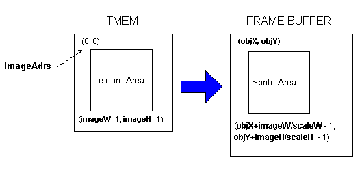
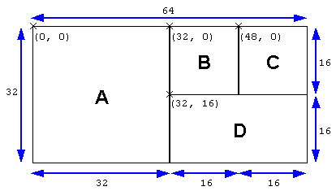

N64® Functions Menu |
 al - Audio Library Functions gDP - DP GBI Macros gdSP - General GBI Macros
al - Audio Library Functions gDP - DP GBI Macros gdSP - General GBI Macros gSP - SP GBI Macros gt - Turbo Microcode RDP gu - Graphics Utilities Math - Math Functions nuSys - NuSystem os - N64 Operating System sp - Sprite Library Functions uh - Host to Target IO 64DD - N64 Disk Drive
gSP - SP GBI Macros gt - Turbo Microcode RDP gu - Graphics Utilities Math - Math Functions nuSys - NuSystem os - N64 Operating System sp - Sprite Library Functions uh - Host to Target IO 64DD - N64 Disk DriveNintendo® Confidential |


|

 |

|
gSPObjRectangle [macro]
Draws a sprite.
Syntax
#include <ultra64.h> /* gs2dex.h */
gSPObjRectangle(Gfx *gdl, uObjSprite *sp)
gsSPObjRectangle(uObjSprite *sp)
Arguments
- gdl is the pointer to the graphics display list.
- sp is the pointer to the sprite drawing data structure
Explanation
Draws a non-rotating sprite. The data of the specified uObjSprite structure (see the Comment section below) is processed inside the RSP to create a TextureRectangle command which is sent to the RDP. For information about sprites, see "Sprite Drawing GBIs" in the latest version of the readme file of the S2DEX microcode.
Notes
This macro can be used in 1-cycle and 2-cycle mode, and in copy mode. When it is used in copy mode, the drawing speed is faster than in the other modes. However, bilinear interpolation, subpixel processing and x-direction enlargement/reduction processing are not supported. (Operation is not guaranteed if these functions are used, and in the worst case, RDP runaway may occur.) You should use the proper mode that corresponds to the needed functions.
The result of drawing with this macro varies, depending on the use of bilinear interpolation and the other render mode settings. For details, refer to the ReadMe file of the latest version of the S2DEX microcode. For information about modes, see Section 2.2.7, "Drawing Cycle Modes" in the N64 Introductory Manual. For information about setting the cycle type, see gDPSetCycleType.
Also, please note that operation is not currently guaranteed for G_IM_FMT_YUV (YUV format).
Cautions
The uObjSprite structure is shown below:
typedef struct {
s16 objX; /* x-coordinate of upper-left corner of OBJ (s10.2) */
u16 scaleW; /* Width-direction scaling (u5.10) */
u16 imageW; /* Texture width (length in s direction, u10.5) */
u16 paddingX; /* Unused (always 0) */
s16 objY; /* y-coordinate of upper-left corner of OBJ (s10.2) */
u16 scaleH; /* Height-direction scaling (u5.10) */
u16 imageH; /* Texture height (length in t direction, u10.5) */
u16 paddingY; /* Unused (always 0) */
u16 imageStride; /* Texel wrapping width (In units of 64-bit words) */
u16 imageAdrs; /* Texture starting position in TMEM (In units of 64-bit words) */
u8 imageFmt; /* Texel format
G_IM_FMT_RGBA (RGBA format)
G_IM_FMT_YUV (YUV format)
G_IM_FMT_CI (CI format)
G_IM_FMT_IA (IA format)
G_IM_FMT_I (I format) */
u8 imageSiz; /* Texel size
G_IM_SIZ_4b (4 bits/texel)
G_IM_SIZ_8b (8 bits/texel)
G_IM_SIZ_16b (16 bits/texel)
G_IM_SIZ_32b (32 bits/texel) */
u16 imagePal; /* Position of palette for 4-bit color index texture (4-bit precision, 0~7) */
u8 imageFlags; /* Display flag
(*) More than one of the following flags can be specified as the bit sum of the flags:
0 (Normal display (no inversion))
G_OBJ_FLAG_FLIPS (s-direction (x) inversion)
G_OBJ_FLAG_FLIPT (t-direction (y) inversion) */
} uObjSprite_t; /* 24 bytes */
typedef union {
uObjSprite_t s;
long long int force_structure_alignment;
} uObjSprite;
This macro draws a texture in the rectangular area with the upper-left corner screen coordinates (objX, objY) and the lower-right corner screen coordinates (objX+imageW/scaleW-1, objY+imageH/scaleH-1). (See the figure below.) The drawn texture region has its upper-left corner at (0, 0) and its lower-right corner at (imageW-1, imageH-1). When scaleW and scaleH are 1<<10, the texture will be drawn to the same proportions, without scaling.

- Concerning the objX and objY elements:
When a sprite is drawn, the scissoring box set by gDPSetScissor is referenced and the drawing area is clipped automatically. Therefore, negative values can also be set for objX and objY.
- Concerning the imageAdrs element:
You can use imageAdrs to specify the texture memory (TMEM) address that corresponds to the origin (0,0) of the texture region. Normally, imageAdrs is set to the start load position in TMEM specified by the texture load macro. It is convenient to use GS_PIX2TMEM when specifying this value. GS_PIX2TMEM, which is the macro that converts pixel units (a numeric value) into TMEM address units, is defined in gs2dex.h:
GS_PIX2TMEM(u16 pix, u8 siz)
The above arguments are explained below:
pix
- The numeric value (pixel units) to be converted to TMEM address units
- siz
- The size of one texel, specified by G_IM_SIZ_*
- G_IM_SIZ_4b (4 bits/texel)
- G_IM_SIZ_8b (8 bits/texel)
- G_IM_SIZ_16b (16 bits/texel)
- G_IM_SIZ_32b (32 bits/texel)
- G_IM_SIZ_4b (4 bits/texel)
- Concerning the imageStride element:
Sets the horizontal width (wrapping width) to be used when loading a texture. This is set because the texture width when the texture is loaded may differ from the imageW value of the actual drawn sprite. Since this is specified in TMEM address units, the above-mentioned GS_PIX2TMEM macro can be used.
You can select the texture to be drawn by using the imageAdrs and imageStride specifications. To do this, load a number of small textures (sub-textures) in TMEM and set the following value for imageAdrs:
imageW = Sub-texture width imageH = Sub-texture height imageAdrs = GS_PIX2TMEM((s-coordinate in TMEM) + (t-coordinate in TMEM) * (texture width at the time of loading, G_IM_SIZ_*)) imageStride = GS_PIX2TMEM(texture width at the time of loading, G_IM_SIZ_*)
To give a specific example, first prepare a large texture that combines four textures, like that shown in the figure below. Load this as a 64x32 texture, and when actually drawing a sprite, specify each texture as follows:

Sub-texture A: imageW = 32; imageH = 32; imageAdrs = GS_PIX2TMEM(0+0*64, G_IM_SIZ_16b) imageStride = GS_PIX2TMEM(64, G_IM_SIZ_16b); Sub-texture B: imageW = 16; imageH = 16; imageAdrs = GS_PIX2TMEM(32+0*64, G_IM_SIZ_16b) imageStride = GS_PIX2TMEM(64, G_IM_SIZ_16b); Sub-texture C: imageW = 16; imageH = 16; imageAdrs = GS_PIX2TMEM(48+0*64, G_IM_SIZ_16b) imageStride = GS_PIX2TMEM(64, G_IM_SIZ_16b); Sub-texture D: imageW = 32; imageH = 16; imageAdrs = GS_PIX2TMEM(32+16*64, G_IM_SIZ_16b) imageStride = GS_PIX2TMEM(64, G_IM_SIZ_16b);
There is one restriction on this method of specification, however. Because the storage format for texture data in TMEM differs for odd-numbered lines and even-numbered lines, you cannot specify for imageAdrs a TMEM address that corresponds to an odd-number line when the texture was loaded. In other words, you cannot set an odd number for (t-coordinate in TMEM) in the imageAdrs calculation formula shown above.
- Concerning the imageFmt element:
G_IM_FMT_RGBA
- Each texel comprises four elements of information: RGB (red, green, blue) and alpha (opacity).
- G_IM_FMT_YUV
- Each texel comprises a Y (intensity) component and a UV (color difference) component.
- G_IM_FMT_CI
- Each texel is comprised of index information specifying palette data.
- G_IM_FMT_IA
- Each texel is comprised of I (intensity) information and alpha information.
- G_IM_FMT_I
- Each texel is a texture with only I information. Since this is extremely compact, it is useful when only a few colors are being used.
Specify the texture format and size by assigning G_IM_FMT_* and G_IM_SIZ_* for imageFmt and imageSiz, respectively. The texture image format can be selected from among eight types. Refer to the following table for valid combinations of format and size, and select the most suitable format for the texture compression method and type. Also, to use a 4-bit color index texture, specify a TLUT number in imagePal.
G_IM_SIZ_ (size) 4b 8b 16b 32b G_IM_FMT_
(format)RGBA X
(5/5/5/1)X
(8/8/8/8)YUV X CI X IA X
(3/1)X
(4/4)X
(8/8)I X
This macro does not reference 2D matrix settings. For this reason, 2D matrix settings do not affect the drawing result of this macro. To reference 2D matrix settings and change the screen coordinate values for drawing, use g*SPObjRectangleR. Also, to rotate a sprite, use g*SPObjSprite.
See Also
gSPObjMatrix
gSPObjRectangleR
gSPObjSprite
gSPObjSubMatrix
Revision History
2/1/1999 Completely rewritten
|
|
|
|
|
|
|
|
|
|
|
|
|
|
|
|
|
|
|
|
|
|
Nintendo® Confidential Warning: all information in this document is confidential and covered by a non-disclosure agreement. You are responsible for keeping this information confidential and protected. Nintendo will vigorously enforce this responsibility. Copyright © 1998-1999 Nintendo of America Inc. All rights reserved Nintendo and N64 are registered trademarks of Nintendo Last updated March 1999 |